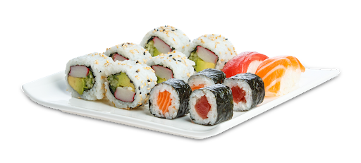
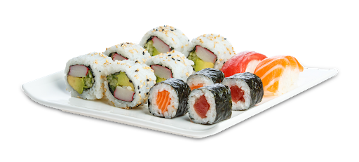

Consigli e Regole
Il cibo è vita, non sprecarlo. Per questo i piatti ordinati e non consumati, oppure quelli avanzati, verranno addebitati al conto. Ordina sempre in modo responsabile.
Puoi effettuare più ordinazioni. Prima di ordinare nuovi piatti occore terminare quelli già serviti.
 
